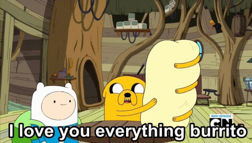

Everything Burrito

Description:
The everything burrito is an extremely large burrito filled with almost everything that is food, and a few things that are inedible like pans.
In "Conquest of Cuteness," Jake prepares the everything burrito for breakfast for both Finn and himself.
The burrito eventually meets its end when it is buried by Jake, much to his dismay, in a grave outside the Tree Fort.
It is buried with a sign that reads "My Burrito" out of the suspicion that it was poisoned by the Cuties, ruled by the Cute King.
Ingredients:
- 2 eggs
- 1 spatula
- 1 grape bunch
- 1 handful of cotton candy
- 1 waffle
- 1 teacup
- 1 slice of cake
- 2 sandwiches
- 1 frying pan
- Mustard
- 1 burger
- A carrot
- A leg ham
- 2 stacks of pancakes
- A used Chinese food package w/ chopsticks
- A whole cake
- 1 strawberry
- A ball of yarn
- A ball of yarn
- Half an orange
- A hotdog
- Fries
- A banana
- Milk (in package)
- 2 chocolate bars
- 6 eggs
- Half an apple
- A blackcurrant
- A loaf of bread
- A roast four-legged chicken
- 2 actual burritos
- A pumpkin
- 2 curls of cheese
- Another orange
- A bowl of cereal /w spoon
- Banana bread
- 1 doughnut
- A tomato
- A raspberry
- A brown powder (probably cocoa)
- 1 meatball
- A forkful of spaghetti w/ fork
- A large burrito wrap
Steps:
- Add ingredients in order.